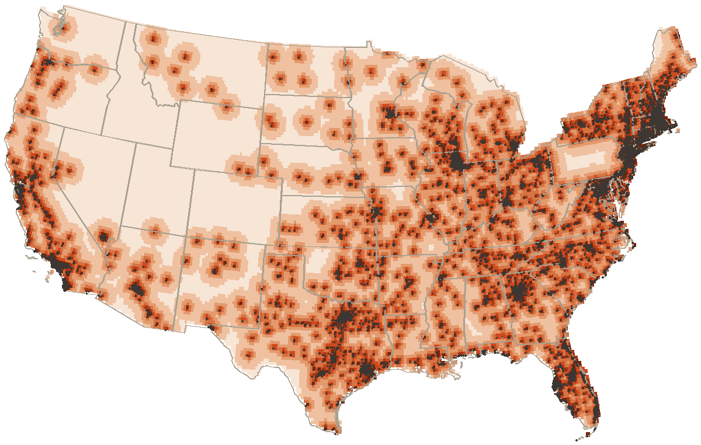

median distance to a donut counter, lower forty-eight
1.2 mi
median distance from one counter to the next
10686
places
0
recipes
476
links between pages
Distance to a donut
Every point in the lower forty-eight, shaded by the distance to the closest of the 10686 places on the map. Black dots are the places themselves. Half the country sits within 32 miles of one.

under 33–66–1010–1818–3030–60over 60miles to the nearest donut counter
The far corners
Miles to a donut
Where
313
41.28, -113.14
313
41.46, -113.32
311
41.28, -112.96
310
41.28, -113.32
309
41.46, -113.14
309
41.28, -112.78
Founding years
The 15 places here whose founding year is on a page. Stems stack where a year is crowded. Hover one for the name.
By decade
Decade
Pits
1920s
1
1950s
3
1960s
3
1970s
1
1980s
2
1990s
1
2000s
3
2010s
1
Ingredients, by how many recipes call for them
Across 0 recipes, counting each ingredient once per recipe. Measures and cutting words are dropped.
As a table
Ingredient word
Recipes
Days open
From the 4268 places whose days we could read. A donut counter keeps the weekend and most of the week. 153 of the 4268 shut on Sunday; another 6418 have no published days at all, and those draw as blanks. A blank means unread, and the filters leave it out.
As a table
Day
Open
Monday
4113
Tuesday
4187
Wednesday
4224
Thursday
4247
Friday
4256
Saturday
4234
Sunday
4115
Kin, by kind of page
Every one of the 476 links between pages, by the kind of page at each end. The row points at the column.
The distance map is computed on a grid clipped to the states' own outlines (Natural Earth, public domain) and measured against every place on the map, most of which come from OpenStreetMap under the ODbL. Everything else is counted straight out of the records.